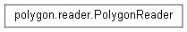

PolygonReader¶

-
class
PolygonReader(fileName='')[source]¶ Reads JSON files and transfers the data into PolygonDrawer objects
Parameters: fileName (str) – Internal filename to write to -
packPolygonDrawer(polygonList, plotType, canvas, master)[source]¶ Stores the data in the JSON into PolygonDrawers :param polygonList: a Python list of PolygonDrawers :param plotType: the current plot being displayed :param canvas: a Tkinter canvas to initializes the blank PolygonDrawer in the polygonList :param master: an instance of Calipso to initialize the blank PolygonDrawer
-